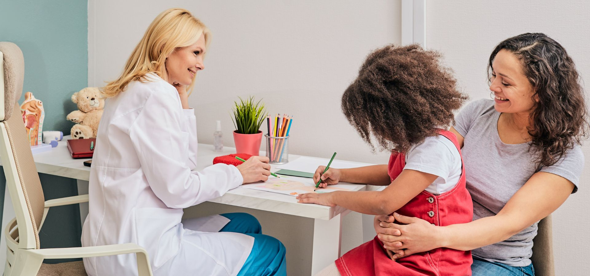

Sobre a Clínica Pediátrica Cultivar
Fundada em 2004, a Clínica Pediátrica Cultivar nasceu da paixão e dedicação de um grupo de profissionais comprometidos com a saúde e bem-estar das crianças. Com 20 anos no mercado, consolidamo-nos como uma referência em cuidados pediátricos, atendendo a comunidade local e proporcionando um ambiente acolhedor e seguro para nossos pacientes e suas famílias.
Nossa missão vai além do tratamento médico. Na Cultivar, acreditamos que cada criança é única e merece cuidados individualizados que respeitem suas necessidades específicas e promovam seu desenvolvimento integral. Nosso compromisso com a excelência se reflete em nossa abordagem holística, que integra cuidados médicos, orientação familiar e suporte emocional para oferecer um atendimento abrangente e personalizado.
Ambiente Acolhedor e Personalizado
Localizada na cidade de São Paulo, nossa clínica foi cuidadosamente projetada para oferecer um ambiente acolhedor, tranquilo e adaptado às necessidades das crianças. Com espaços lúdicos, salas de espera confortáveis e consultórios equipados com tecnologia de ponta, buscamos criar uma experiência positiva e sem estresse para nossos pequenos pacientes e seus cuidadores.
Nosso ambiente é pensado para estimular o desenvolvimento cognitivo, emocional e social das crianças, proporcionando um espaço seguro e convidativo para elas explorarem, aprenderem e se expressarem livremente. Além disso, nossa equipe é treinada para acolher as famílias com empatia e compreensão, criando uma atmosfera acolhedora e familiar que facilita a comunicação e fortalece o vínculo entre profissionais de saúde, crianças e seus cuidadores.